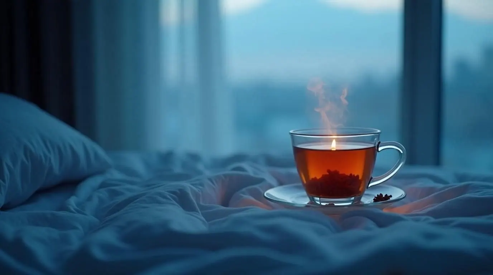

이사 직후에는 냄새와 소리, 불빛, 침대 위치가 달라져 잠이 얕아지는 일이 흔합니다. 새 방의 환경을 익숙하게 맞추고 기상 시각을 지키는 것부터 살피고, 몇 주 넘게 이어지면 잠의 모양을 함께 봅니다.
여쭙는 것
- 이사한 뒤 며칠째 잠이 달라졌나요?
- 새 집에서 유난히 거슬리는 소리나 불빛, 냄새가 있나요?
- 이사 준비로 늦게 자고 일찍 일어난 날이 이어졌나요?
생활에서 해 볼 것
- 침대 위치와 커튼, 조명을 이전 집과 비슷하게 맞춰 보기
- 익숙한 베개와 이불, 잠옷을 가장 먼저 꺼내 두기
- 새 가구나 벽지 냄새가 있다면 자기 전 충분히 환기하기
한의원에서 함께 살필 것
- 이사 이후 몇 주가 지나도 잠들기 어려운 경우 수면 시각과 긴장의 정도를 함께 살핍…
- 몸은 피곤한데 마음이 들떠 밤에 쉬지 못하는 경우 식사와 소화, 몸의 온기를 함께…
- 새 환경에서 불안한 느낌이 이어지는 경우 낮의 생활 리듬 전체를 함께 살핍니다.
먼저 확인이 필요한 신호
- 새 집에서 두통이나 어지럼, 호흡 불편이 반복되어 환경 문제가 의심되는 경우
- 보일러나 가스레인지를 쓴 뒤 두통, 어지럼, 메스꺼움이 함께 생기는 경우
- 한 달 넘게 거의 잠을 자지 못하는 경우

이삿짐을 정리하느라 몸은 지쳐 있는데 막상 누우면 눈이 말똥말똥한 분이 많습니다. 집이 바뀌면 잠도 한동안 낯설어합니다. 대개 몇 주 안에 익숙해지지만, 그동안 잠자리를 어떻게 꾸리느냐에 따라 적응 속도가 달라집니다.
왜 이런 불편이 생길 수 있나요
- 낯선 공간에서는 몸이 주변을 살피느라 경계를 쉽게 풀지 못해 잠이 얕아지기 쉽습니다.
- 창문 방향과 커튼이 바뀌면 아침 빛이 들어오는 시각이 달라져 일찍 깨기도 합니다.
- 도로 소음이나 엘리베이터 소리처럼 처음 듣는 소리는 익숙한 소리보다 잠을 더 깨우기 쉽습니다.
- 이사 준비로 며칠씩 늦게 자고 몸을 많이 쓰면 오히려 긴장이 풀리지 않는 경우가 있습니다.

먼저 이렇게 여쭙니다
- 이사한 뒤 며칠째 잠이 달라졌나요?
- 새 집에서 유난히 거슬리는 소리나 불빛, 냄새가 있나요?
- 이사 준비로 늦게 자고 일찍 일어난 날이 이어졌나요?
- 새 방의 온도와 습도는 어떤가요?
- 낮에 몸을 많이 쓰고도 밤에 몸이 쉬지 못하는 느낌인가요?
일상에서 먼저 해 볼 수 있는 것
- 침대 위치와 커튼, 조명을 이전 집과 비슷하게 맞춰 보기
- 익숙한 베개와 이불, 잠옷을 가장 먼저 꺼내 두기
- 새 가구나 벽지 냄새가 있다면 자기 전 충분히 환기하기
- 늦게 잔 날에도 일어나는 시각은 크게 바꾸지 않기
- 이사 뒤 한 주는 낮에 밖에서 걷는 시간을 짧게라도 넣기
- 짐 정리는 침실부터 먼저 끝내고, 풀지 않은 상자는 잠자리에서 보이지 않는 곳에 두기
- 커튼을 아직 달지 못했다면 임시로 두꺼운 천이나 수면 안대로 새벽 빛 가리기
- 밤에 화장실 가는 길이 낯설다면 발밑을 비추는 작은 수면등 켜 두기
상황별 예시
- 예를 들어 주말 이틀 동안 이사를 마치고 바로 출근한 직장인이라면, 퇴근 뒤 밤늦게까지 짐을 풀다 보니 잠드는 시각이 매일 달라지기 쉽습니다. 짐 정리는 밤 9시까지로 끊고, 첫 주에는 침실과 욕실만 먼저 정리해 잠자리부터 안정시키는 순서를 권합니다.
- 예를 들어 큰길가 집으로 옮긴 뒤 새벽 버스 소리와 창밖 불빛에 4~5시면 깨는 경우, 침대를 창문에서 먼 벽 쪽으로 옮기고 암막 커튼이나 안대, 잔잔한 백색소음을 써 봅니다. 깬 뒤 바로 휴대폰을 보기보다 눈을 감고 숨을 길게 내쉬며 누워 있어 봅니다.
- 예를 들어 자녀 집 근처로 옮겨 오신 어르신이 밤에 깨면 방향이 헷갈려 불안하다고 하신다면, 침실에서 화장실까지 수면등을 두어 넘어지지 않게 하는 것이 먼저입니다. 낮에는 동네 공원이나 시장을 걸으며 바깥 빛을 받고 새 동네에 익숙해지는 시간을 가져 봅니다.
스스로 점검해 보세요
- 이사한 지 2주가 지났는데도 잠들기까지 30분 넘게 걸리는 날이 일주일에 세 번 이상이다.
- 새 집의 특정 소리나 불빛 때문에 깨는 일이 거의 매일 반복된다.
- 침실에 아직 풀지 않은 짐 상자가 쌓여 있다.
- 늦게 잔 다음 날 일어나는 시각이 두 시간 넘게 달라진다.
- 잠을 청하려고 술을 마시거나 누운 채 휴대폰을 오래 본다.
- 새 집에서만 머리가 아프거나 목이 따갑고, 밖에 나가면 덜하다.
- 이사 뒤 입맛이 줄거나 속이 더부룩한 날이 늘었다.

한의원에서 함께 살필 수 있는 경우
- 이사 이후 몇 주가 지나도 잠들기 어려운 경우 수면 시각과 긴장의 정도를 함께 살핍니다.
- 몸은 피곤한데 마음이 들떠 밤에 쉬지 못하는 경우 식사와 소화, 몸의 온기를 함께 살핍니다.
- 새 환경에서 불안한 느낌이 이어지는 경우 낮의 생활 리듬 전체를 함께 살핍니다.
좋은꿈참사랑한의원에서는 첫 방문 때 이사 전후의 잠 변화와 낮 생활, 새 집에서 거슬리는 점을 먼저 듣습니다. 그다음 맥부터 짚어 보고, 필요하다고 판단될 때 혀와 배를 함께 살펴 몸의 긴장과 소화 상태를 확인합니다. 짐을 나르다 허리나 어깨가 결린 경우라면 움직임을 함께 보고, 필요하면 초음파로 근육과 힘줄을 살피기도 합니다. 그 뒤 잠자리 정리와 기상 시각처럼 생활에서 해 볼 것을 함께 정하고, 필요하면 침이나 한약 상담을 이어 갑니다. 다음에 오시면 지난번 이야기를 이어서 여쭙고, 기록을 놓고 무엇이 달라졌는지 함께 봅니다. 동작구로 새로 이사 오신 분이라면 진료 시간과 오시는 길도 함께 안내해 드립니다.
얼마나 지켜보고 언제 상담할까요
- 이사 뒤 첫 1~2주는 잠이 얕은 것이 흔합니다. 잠자리 환경과 기상 시각을 맞춘 채 잠드는 시간과 깬 횟수를 적으며 지켜봅니다.
- 2~4주가 지나도 잠드는 데 30분 넘게 걸리거나 새벽에 깨는 날이 일주일에 세 번 이상 이어진다면 상담을 받아 보세요.
- 잠이 부족해 낮에 업무나 운전이 어렵다면 기간과 관계없이 먼저 상담하세요.
- 새 집에서만 두통이나 어지럼, 호흡 불편이 반복된다면 환기를 하고 바로 병원 진료를 받으세요.

이렇게 기록해 오시면 상담이 쉬워집니다
- 이사 날짜와 잠이 달라진 날
- 잠드는 데 걸리는 시간과 밤에 깨는 횟수
- 새 방에서 거슬리는 소리·빛·냄새
- 복용 중인 수면제나 다른 약
이런 증상은 먼저 확인이 필요합니다
- 새 집에서 두통이나 어지럼, 호흡 불편이 반복되어 환경 문제가 의심되는 경우
- 보일러나 가스레인지를 쓴 뒤 두통, 어지럼, 메스꺼움이 함께 생기는 경우
- 한 달 넘게 거의 잠을 자지 못하는 경우
- 낮에 운전이나 업무 중 참기 어려운 졸음이 이어지는 경우
- 코골이가 심해지거나 자다가 숨이 멎는 듯하다는 말을 들은 경우
- 기분이 크게 가라앉아 아무것도 하기 싫거나 스스로를 해치고 싶은 생각이 드는 경우
보일러나 가스를 쓴 뒤 두통과 메스꺼움이 함께 오면 곧바로 창문을 열고 밖으로 나가 119에 연락하세요. 코골이와 숨 멈춤, 심한 낮 졸음이 함께 있다면 수면 검사가 가능한 의료기관에서 먼저 확인해 보세요. 졸음이 심한 날에는 운전을 피하세요. 복용 중인 수면제나 신경안정제는 처방한 의사와 상의 없이 줄이거나 끊지 않습니다. 스스로를 해치고 싶은 생각이 들면 혼자 견디지 말고 바로 109(자살예방상담전화)나 119에 연락하세요.
관련 글
- 침대나 매트리스를 새로 바꾼 뒤 한동안 잠이 낯설 때는 어떻게 하나요?
- 출장이나 여행지 숙소에서 낯선 침대 때문에 잠을 설칠 때는 어떻게 하나요?
- 작은 소리에도 자주 깨는 분은 어떤 점을 살펴보나요?
한눈에 보는 표
| 구분 | 핵심 |
|---|---|
| 여쭙는 것 | 이사한 뒤 며칠째 잠이 달라졌나요? 새 집에서 유난히 거슬리는 소리나 불빛, 냄새가 있나요? |
| 생활에서 해 볼 것 | 침대 위치와 커튼, 조명을 이전 집과 비슷하게 맞춰 보기 익숙한 베개와 이불, 잠옷을 가장 먼저 꺼내 두기 |
| 한의원에서 함께 살필 것 | 이사 이후 몇 주가 지나도 잠들기 어려운 경우 수면 시각과 긴장의 정도를 함께 살핍니다. 몸은 피곤한데 마음이 들떠 밤에 쉬지 못하는 경우 식사와 소화, 몸의 온기를 함께 살핍니다. |
| 먼저 확인이 필요한 신호 | 새 집에서 두통이나 어지럼, 호흡 불편이 반복되어 환경 문제가 의심되는 경우 보일러나 가스레인지를 쓴 뒤 두통, 어지럼, 메스꺼움이 함께 생기는 경우 |
자주 묻는 질문
이사한 집에서 잠이 안 오는 것은 얼마나 이어지나요?
사람마다 다르지만 환경에 익숙해지면서 며칠에서 몇 주에 걸쳐 나아지는 경우가 많습니다. 오래 이어진다면 상담해 보시길 권합니다.
새집 냄새 때문일 수도 있나요?
냄새나 자극으로 불편이 생길 수 있어 환기와 함께 몸의 반응을 살펴보는 것이 좋습니다. 두통이나 호흡 불편이 심하면 병원 진료를 먼저 받으세요.
이사 후 침실은 어떻게 꾸미면 좋을까요?
어둡고 조용하며 서늘한 쪽이 잠들기 편한 경우가 많습니다. 이전 집에서 편했던 조건을 떠올려 비슷하게 맞춰 보세요.
이사 뒤 잠이 안 와서 수면 보조제를 먹어도 되나요?
새로 약을 드시기 전에는 의사나 약사와 먼저 상의하는 것이 안전합니다. 이미 복용 중인 약이 있다면 임의로 양을 바꾸지 마세요.
이전 집에서 쓰던 물건을 두면 도움이 되나요?
익숙한 베개나 이불, 잠옷의 촉감과 냄새는 낯선 방에서도 몸이 쉬어도 된다는 신호가 되기 쉽습니다. 새로 사기보다 쓰던 것을 먼저 꺼내 두시길 권합니다.
이사 온 동네에서 처음 진료받을 때 무엇을 챙기면 좋을까요?
이사 날짜와 잠이 달라진 날, 복용 중인 약 목록을 챙겨 오시면 상담이 수월합니다. 건강보험 적용 여부나 비용이 궁금하시면 방문 전 전화(02-815-7510)로 확인해 주세요.
이 글은 일반적인 건강 정보이며 개인의 진단이나 치료를 대신하지 않습니다. 증상이 있거나 복용 중인 약이 있다면 진료를 통해 확인하세요. 치료 효과는 개인마다 다를 수 있습니다.
작성 기준: 일반적으로 알려져 있는 건강 정보를 참고해 정리했습니다(대표원장 감수). 증상 기록은 1~2주 동안 하루 1회, 비슷한 시간에 적어 오시면 지난 상태와 비교하기 쉽습니다.
좋은꿈참사랑한의원은 재진 때 지난번 이야기부터 이어서 여쭙니다. 진료시간과 예약은 오시는 길에서 확인하세요.
어디서 상담받을 수 있나요?
좋은꿈참사랑한의원은 서울 동작구 만양로2길 2 신성빌딩 3층·5층(서울 동작구 상도동, 7호선 상도역 3번 출구 근처)에 있습니다. 한의사 3명(이종호 대표원장, 조영기 수석진료원장, 정원영 진료원장)이 진료합니다. 진료시간은 평일 09:30~20:00(점심 13:00~14:00), 토·일·공휴일 09:30~15:00이며, 방문 전 전화로 확인을 권합니다. 예약은 네이버 예약, 카카오톡 상담, 전화 02-815-7510로 받습니다.